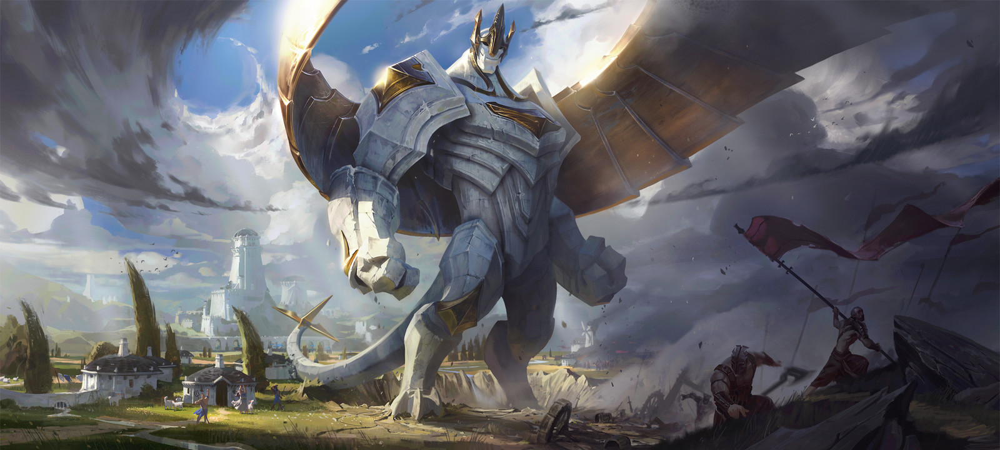

tu devrais essayer Galio, le gardien de démacia!

Galio est un tank hybride, lui permettant de joueur de manière défensive comme offensive en achetant des objets magiques, galio possède de puissant contrôle de zone lui permettant de regrouper l'équipe ennemie facilement ou de voler au secours d'un allié en faisant un attérissage héroïque